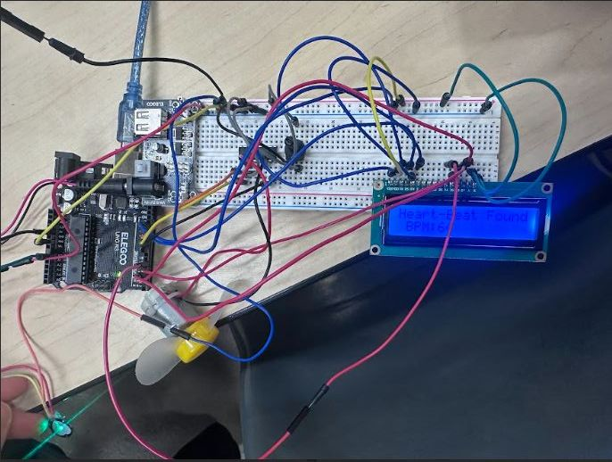
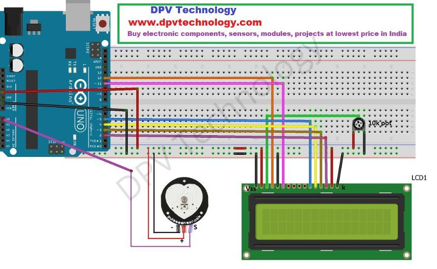

Back to projects
MetaPulse heart rate monitor
BMES Arduino Heart Rate Monitor Design CompetitionAn Arduino Uno, a pulse sensor, and a 16x2 LCD that displays heart rate in real time. It works on any appendage with blood flow, not just a finger.
C/C++Firmware
Live BPMOn a 16x2 LCD
4Team members
My role
I led the design, wiring, and programming, from circuit layout to firmware. The result was a functioning device that measured and displayed heart rate in real time. Team: Anthony, Shadid, Leo, and Rameesha.
How it works
The pulse sensor is light based. As blood flow increases, less light reaches the sensor, and the firmware turns that signal on A0 into beats per minute. When pressure on the sensor is right, readings were consistent against professional monitors.


Wiring
| Part | Pin | Connects to |
|---|---|---|
| Pulse sensor | S / + / - | A0 / 5V / GND |
| LCD | VSS, RW, K | GND |
| LCD | VDD | 5V |
| LCD | V0 | Middle pin of 10k pot, ends to 5V and GND |
| LCD | RS / E | D12 / D11 |
| LCD | D4 / D5 / D6 / D7 | D5 / D4 / D3 / D2 |
| LCD | A | 5V through 220 ohm |
Sketch
Full sketch for the wiring above. Download metapulse.ino
/*
MetaPulse: Arduino Uno + Pulse Sensor + 16x2 LCD (BPM display)
Wiring
------
Pulse sensor: S (signal) -> A0, + -> 5V, - -> GND
LCD 16x2 (4-bit mode):
LCD VSS -> GND LCD VDD -> 5V
LCD V0 -> middle pin of 10k pot (contrast), pot ends to 5V/GND
LCD RS -> D12 LCD RW -> GND
LCD E -> D11
LCD D4 -> D5 LCD D5 -> D4
LCD D6 -> D3 LCD D7 -> D2
LCD A -> 5V (through 220 ohm) LCD K -> GND
Method: the sensor output rises and falls with blood flow. The sketch
tracks the signal's peak and trough, sets an adaptive threshold halfway
between them, and times the gap between rising crossings (inter-beat
interval). BPM is the average of the last few valid intervals.
*/
#include <LiquidCrystal.h>
const int PULSE_PIN = A0;
LiquidCrystal lcd(12, 11, 5, 4, 3, 2); // RS, E, D4, D5, D6, D7 pins
const unsigned long SAMPLE_MS = 5; // 200 samples per second
const unsigned long NO_PULSE_MS = 2500; // reset if no beat for this long
const int MIN_IBI = 300; // 200 BPM upper limit
const int MAX_IBI = 2000; // 30 BPM lower limit
const int AVG_COUNT = 5;
int thresh = 512, peakVal = 512, troughVal = 512;
bool inPulse = false, firstBeat = true;
unsigned long lastBeat = 0, lastSample = 0, lastDraw = 0;
unsigned long ibi = 800;
unsigned long ibiBuf[AVG_COUNT];
int ibiCount = 0, ibiIdx = 0;
int bpm = 0;
int s1 = 512, s2 = 512, s3 = 512; // moving average window
void resetDetector() {
thresh = 512; peakVal = 512; troughVal = 512;
inPulse = false; firstBeat = true;
ibiCount = 0; ibiIdx = 0; bpm = 0;
lastBeat = millis();
}
void addInterval(unsigned long v) {
ibiBuf[ibiIdx] = v;
ibiIdx = (ibiIdx + 1) % AVG_COUNT;
if (ibiCount < AVG_COUNT) ibiCount++;
unsigned long sum = 0;
for (int i = 0; i < ibiCount; i++) sum += ibiBuf[i];
bpm = (int)(60000UL / (sum / ibiCount));
}
void drawLcd() {
lcd.setCursor(0, 0);
if (bpm > 0) {
lcd.print("Heart-Beat Found");
lcd.setCursor(0, 1);
lcd.print("BPM: ");
lcd.print(bpm);
lcd.print(" ");
} else {
lcd.print("Place sensor on ");
lcd.setCursor(0, 1);
lcd.print("skin and hold ");
}
}
void setup() {
lcd.begin(16, 2);
lcd.print("MetaPulse");
delay(1200);
lcd.clear();
resetDetector();
}
void loop() {
unsigned long now = millis();
if (now - lastSample >= SAMPLE_MS) {
lastSample = now;
s3 = s2; s2 = s1; s1 = analogRead(PULSE_PIN);
int sig = (s1 + s2 + s3) / 3;
unsigned long since = now - lastBeat;
if (sig < thresh && since > (ibi * 3) / 5 && sig < troughVal) troughVal = sig;
if (sig > thresh && sig > peakVal) peakVal = sig;
// Rising crossing of the threshold marks a beat
if (sig > thresh && !inPulse && since > 250 && since > (ibi * 3) / 5) {
inPulse = true;
if (firstBeat) {
firstBeat = false; // first interval is not reliable
} else if (since >= MIN_IBI && since <= MAX_IBI) {
ibi = since;
addInterval(since);
}
lastBeat = now;
}
// Falling crossing: update threshold from the latest amplitude
if (sig < thresh && inPulse) {
inPulse = false;
int amp = peakVal - troughVal;
if (amp > 20) thresh = troughVal + amp / 2; // ignore noise-sized swings
peakVal = thresh;
troughVal = thresh;
}
if (since > NO_PULSE_MS) resetDetector();
}
if (now - lastDraw >= 250) {
lastDraw = now;
drawLcd();
}
}